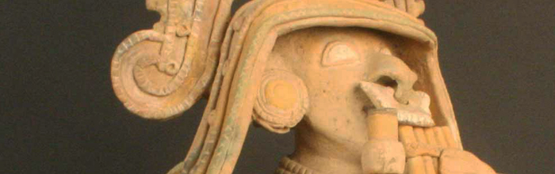
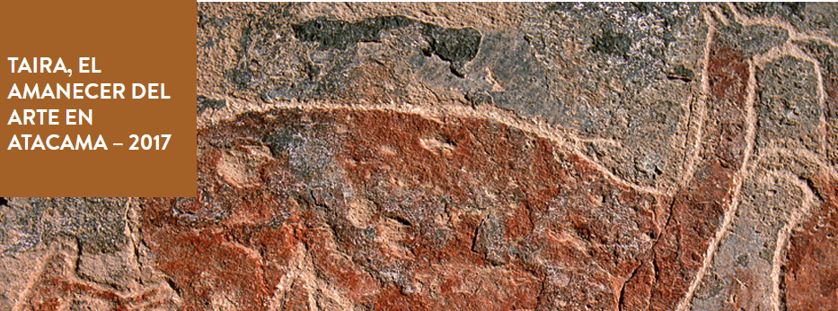

EXPOSICIONES

Han transcurrido más de 14.000 años desde que el ser humano puso sus pies en el actual territorio chileno. Desde entonces, diferentes pueblos han habitado esta variada geografía. Aunque no todos están representados en esta exhibición, les invitamos a conocer a esos habitantes ancestrales y a sus descendientes, los actuales pueblos originarios. Esta muestra nos recuerda que sus genes, sus manifestaciones artísticas y su épica forman parte de nuestra identidad como chilenos.
Mini sitios sobre las exposiciones temporales que el Museo exhibe cada año
Exhibiciones preparadas por el Museo para itinerar por Chile y el Mundo.
